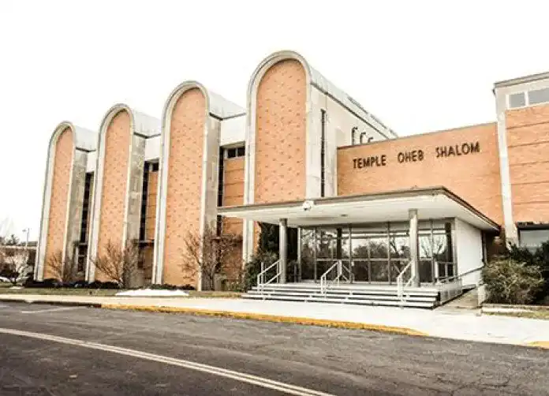
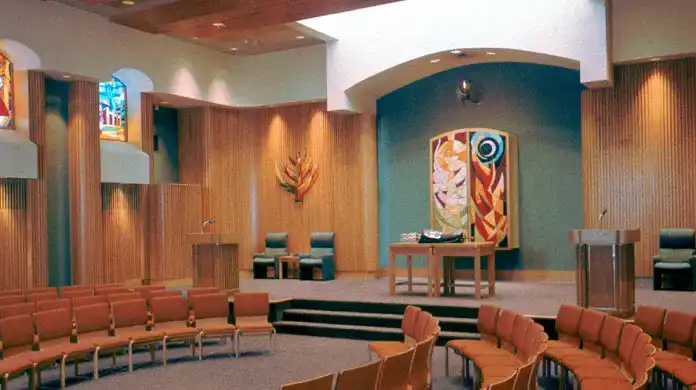

Son histoire
La congrégation a été fondée en 1853 par des immigrants juifs originaires des États membres de la Confédération allemande, de Hongrie et des territoires tchèques
Le rabbin réformateur pionnier Isaac Mayer Wise a eu une influence considérable sur la création de la congrégation.
Sa première maison se trouvait sur Hanover Street, près de Camden Yards[3].

Sa conception
En 1892, la congrégation construit le temple d'Eutaw Place, conçu par l'architecte Joseph Evans Sperry qui s'inspire de la Grande Synagogue de Florence dans le style néo-mauresque à la mode. La congrégation vend le bâtiment aux francs-maçons Prince Hall en 1961.
En 1953, la congrégation termine la construction de son bâtiment actuel avec l'architecte-conseil Walter Gropius en 1960. La conception est dominée par quatre grandes voûtes.
